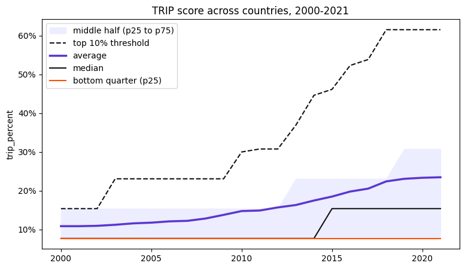
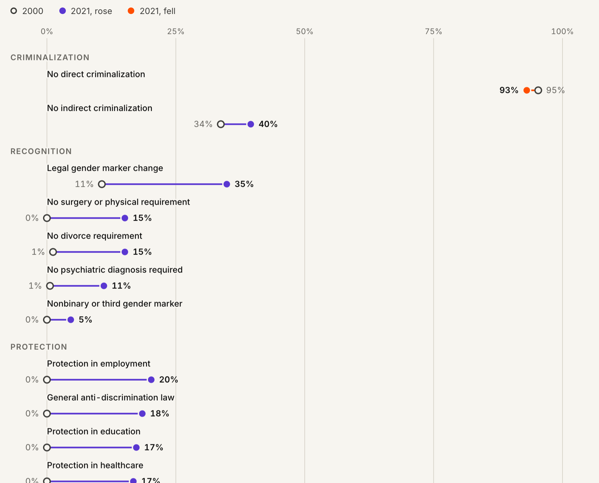

- Type
- Personal Project
- Category
- Data Story
- Timeframe
- 2026
- Tools
- Python, Observable Framework, D3.js
The Dataset
13 indicators in 173 countries from 2000 to 2021
Uneven Ground is an article about what the world’s laws say about trans people. It is built on the Trans Rights Indicator Project ↗︎ (TRIP), which political scientist Myles Williamson created for his doctoral research at the University of Alabama and published in Perspectives on Politics in 2024.
Williamson coded the laws of 173 countries by hand, for every year from 2000 to 2021, using 13 yes-or-no indicators in three groups. A country’s score is the number of those 13 it meets.
Criminalization
- No direct criminalization
- No indirect criminalization
Recognition
- Legal gender marker change
- No surgery or physical requirement
- No divorce requirement
- No psychiatric diagnosis required
- Nonbinary or third gender marker
Protection
- Protection in employment
- General anti-discrimination law
- Protection in education
- Protection in healthcare
- Protection in housing
- Constitutional protection
Choosing the Story
The average was hiding the story
I explored the data in a Python notebook before deciding what the article should say. The headline looked like good news: the average score more than doubled, from 10.9% in 2000 to 23.5% in 2021.
Then I plotted the median and percentiles next to it, and the average stopped looking like a fair summary. A few dozen countries rewrote their laws, often more than once, while 88 ended 2021 with exactly the score they had in 2000. The bottom quarter scored 7.7% in both years.
That gap became the story: not whether the world made progress, but who it reached. Comparing scores by region and by income then pointed to the exceptions the article’s map is built around, like Pakistan, which scores 11 of 13 with a GDP per capita of about $1,500, far below every other country scoring 10 or more.

Design Process & Decisions
From a dashboard to one story
The project didn’t start as an article. My first version, in February 2026, was a dark, multi-page explorer with global, regional and country views, and a chart for each: trend lines, a map, a beeswarm, country comparisons.
Once the finding was clear, the structure changed. By June I had cut it down to a single page built on four questions, with one main chart to answer each.
In October I redesigned it as a light, editorial piece: a warm paper background, Besley and Inter type, and charts that change as you scroll. I also rewrote the text and checked every number against the notebook.
Fig. 1: Did the world progress?
One average line would answer this with a flat yes. So the chart starts with the average, then adds the median, the middle half, the top tenth and the bottom quarter one scroll step at a time. By the end, the top tenth’s threshold has reached 61.5% and the bottom quarter hasn’t moved.

Fig. 2: Where did progress happen?
A map keeps the geography in view. It flies from region to region as you scroll, so each regional pattern and the countries that break it share one frame, with names and scores written directly on the map.
Earlier versions used a continuous colour scale. But 78% of all country-years score 0, 1 or 2 out of 13, so a gradient squeezed most of the world into a sliver of its range. Six fixed classes keep those small differences visible.

Fig. 3: Which rights improved most?
Plotting each right over time in the notebook showed the order: gender marker change climbed first, and most protections grew after 2010. For the article, a dot plot keeps only 2000 and 2021, grouped by criminalization, recognition and protection, so all 13 rows read at a glance.
The one right that got worse is the only one in orange. Six country cards below the chart then show how different the same score can be.

Fig. 4: What does it all look like at once?
Every country and every year in one image, sorted by 2021 score, so the finding becomes a shape: a dark corner at the top right and a bottom that barely changes.
Scroll steps fade everything except the part being discussed, like the bottom quarter shown here, and a search box lets you find any country.

Retrospective
What I learned
I built charts before I had a story. The first version could show almost anything but argued nothing, and most of it was thrown away once the finding was clear. Next time I would start with the notebook and the question, and only then choose the charts.
Checking every number changed the article, not just the footnotes. An early draft presented Argentina as the complete case, at 100%. Checked indicator by indicator, it scores 46%: full recognition and no protection at all. The correction gave me a better example than the one I started with.
A dataset’s limits belong in the story. TRIP records the law, not daily life, and it stops in 2021. Saying so up front, and closing the article on what the data can’t see, made the argument more honest.